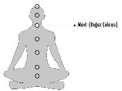

5- MAVİ – BOĞAZ ÇAKRASI (İFADE):
Boğaz çakrası, boğazın bulunduğu yerdedir ve kişinin kendisini ifade etmekle ilgili kullandığı enerji merkezidir. Mavi “Ki” toplarıyla çalıştırılır.
Bu bölgede var olan blokajlar, kişinin kendisini tam ve doğru ifade edememesinden dolayı oluşur. Boğaz çakrasında problemi olan kişilerde genellikle boğaz enfeksiyonu, tiroid kanseri gibi boğaz hastalıkları meydana gelir.
“İfade” diğer insanlarla kurulan iletişimin kalitesini belirlediğinden oldukça önemli bir konudur.
Sosyal hayatta yaşanan sorunların yüzde 90’ının iletişimsizlikten kaynaklandığını düşünecek olursak, boğaz çakrasının hayati öneminin bir kez daha altını çizmek gerekir.
İfade sorunu yaşayan bir hastama “Kendini doğru anlattığını düşünüyor musun?” diye sorduğumda bana, sesini yükselterek “Tabii ki kendimi iyi ifade ediyorum. Haksızlığa karşı tepkiliyim. Sonuna kadar hakkımı ararım. Derdimi anlatırım” dedi. Kendisinden bunu nasıl yaptığını anlatmasını istediğimdeyse ses tonu daha da yükselerek “Gerekirse ortalığı birbirine katarım. Bağırırım, kavga ederim. Bir adım bile geri atmam” yanıtını verdi.
Ses tonu yükseldikçe ve bağırarak konuştukça kendisini daha güçlü ifade ettiğini sanıyordu oysa zerre kadar derdini anlatabilmiş ve kendisini ifade edebilmiş değildi.
Konuşurken bağırıyorsan ve giderek sesin yükseliyorsa “ifade” etmiyorsundur!
Zaten ifade edemediğini düşündüğün noktada bağırmaya
başlarsın ve bunun adı “iletişim” olmaz.
Karşındakinin seni anlamadığını ve dolayısıyla kendini doğru anlatamadığını düşündüğün için sesini yükseltmeye ihtiyaç duyduğun noktada “ifade” son bulur.
Çok bağırmak ya da çok konuşmak “ifade” etmek değildir.
Sesini yükselttiğin an bil ki; karşındakine ifade edemediğini hissetmişsindir ve sorunun karşı tarafta olduğunu sanarak “kafan almıyor mu?” serzenişiyle yanlış hedefe yönelmişsindir.
“İfade” sadece sözel yolla gerçekleşen bir eylem değildir. İfadenin içinde sözler kadar enerjin de önemli bir faktördür.
Bundan yaklaşık on yıl kadar önce döneminin ünlü kişisel gelişim ofislerinden birini açan arkadaşım, teknik olarak neredeyse eksiksiz bir hizmet verdiği halde, katılımcılarına sunduğu enerjide problemliydi. Öğrencilerini güler yüzle, şık elbiseler içinde, oldukça saygılı bir tavırla karşılamasına ve iyi de bir seminer eğitim programı olmasına karşılık, yaydığı enerjideki sorun çokça hissediliyordu. Döneminin en iyilerinden biri olduğu halde kısa süre içinde kurum olarak irtifa kaybedip başarısız oldu.
– Metin kişisel gelişim eğitimi veren binlerce insan var. Senin onlardan farkın ne?
– Bambaşka bir dünyaya inanan, “gönül” farkım var.
Diğer herşeyde onlar benden ilerideler...
Şunu bilmeni isterim ki:
İletişimdeki enerjin, kurduğun iletişimin yüzde seksenini belirler...
Sözle söylediğinden çok, enerjinin ne anlattığı iletişimin yönünü tamamen değiştirebilir.
Mesela, bir kadın hastam eşini başka bir kadınla yakalamış ve kavga ettiği kocasına da artık evi terk etmesi gerektiğini söylemişti. Eşinin evden gidip gitmediğini sorduğumda, adamın evde kalmaya devam ettiğini öğrendim. “Ondan gitmesini istediğin halde neden evde kalmaya devam ediyor?” diye sorduğumda bana “Evet... Gitmesini istedim ama beni dinlemedi. Ben de yemeğini önüne fırlattım, kanepeye de bir battaniye atıp odama çekildim” dedi.
Kadın, aslında eşinin evi terk etmesini istemiyordu ve enerjisiyle bunu kocasına karşı gayet iyi ifade ediyordu. Ağzından çıkan sözlerle ona gitmesi gerektiğini söylediyse bile beden diliyle ifade ettiği şey; adamı çok sevdiği, onun bir yere gitmesini istemediği, her şeye rağmen evliliğine geri dönmesi ve onu affetmeye dünden hazır olduğuydu.
Kadına bu konuda dürüst davranmadığını hatırlatıp “Sen eşinin gitmesini istememişsin. Bunu sözle söylediysen de, enerjinle evde kalmasını istediğini açıklamışsın ve o da bu davetini kabul etmiş. Eğer eşini evde bir daha görmek istemeseydin o bugün seninle aynı evde kalmaya devam edemezdi” dedim.
Ağzından çıkan sözlerin, enerjin ve davranış biçimin kurduğun iletişimle bir bütündür. Sözle yüzde yirmi “git” derken, enerjinle yüzde seksen “geri dön daveti” yaparsan hem kendine karşı dürüst davranmamış olursun, hem de içinde çeliştiğinden doğru “ifade” edememiş sayılırsın.
Bir ilişki devam ediyorsa eğer, taraflardan biri karşısındakine hayır diyemediği için devam etmez. “Ben istemiyorum ama o beni dinlemediği için ilişkiye devam ediyoruz” şeklindeki komik açıklamalar, yaşanan gerçeği ve aldatmacayı gölgeleyemez.
İlişkide taraflardan biri “hayır” dediyse o ilişki bitmiştir. Karşı taraf kabul etmediği halde ilişki devam edebilecekse, o halde ben de hemen dünyaca ünlü bir starla ilişkiye başlayayım ve o da bana “Hayır” dediği halde ben onu dinlemeyerek beraberliğimize devam edeyim.
Böyle anlattığımda kulağa ne kadar da komik geliyor değil mi? Oysa gerçek hayatta çok insanın zaten yaşadığı bir ilişki durumundan bahsediyorum. Bunu yapan ve yaşadığı trajikomik durumun farkında olmayan çok insan tanıyorum.
Tek başına tenis oynanmaz!
Attığın top geri gelmezse tenis oynamakta ısrar etmezsin.
İşte hayatındaki her insan da, sen yanıt verdiğin için oradalar...
“Hayır” deme cesareti olmayan kişilerin sıkça kullandığı bu “hileli ifade” şekli, yaşanan beraberlikte bir sıkıntı ve sürünceme olduğunun da kanıtıdır.
En büyük iletişim problemimiz:
Anlamak için dinlemiyoruz.
Cevap vermek için dinliyoruz...
Uzakdoğu seyahatimiz sırasında sevdiğim bir arkadaşım koluna giren travestiyle karşılıklı eğlenmeye başlamıştı. Ben, kendi tabiriyle “koyu delikanlı” olan bu arkadaşımın, kıza bir an evvel “hayır” deyip ondan kurtulmasını beklerken, o yaşanan bu komediyi uzatmakta kararlıydı. Arkadaşıma sürekli “Hadi kıza hayır de, yolumuza devam edelim” diyordum ama o gülümseyerek “No no diyorum ama beni dinlemiyor işte” deyip duruyordu.
“Sana söz veriyorum Tayland’da yaşananlar aramızda kalacak. Anladığım kadarıyla senin bu macerada gönlün var. Lütfen rahat ol” dediğim an olanlar oldu ve koyu delikanlı arkadaşım yaşanan komedinin, giderek bu işte gönüllü olduğu yoluna gittiğini hissedince, kolundaki travestiye dönüp sadece bir kez “No” dedi ve bu sohbeti istemediğini belirten nazik bir el hareketi yaptı. İkisi arasındaki temas derhal o noktada koptu.
Dakikalardır kıza “hayır” dediği halde, kız bir kez bile geri adım atmazken, şimdi ne olmuştu da tek bir sözle iletişim sonlanmıştı?
Tebrik ederim...
Konuyu anladığını biliyordum!
Senin de düşündüğün gibi arkadaşım sonunda ne istediğine karar vermiş ve bunu ifade etmişti... İletişimde fark yaratan ayrıntı enerjiyle alakalıydı!
İfade ettiğin enerji,
kurduğun iletişimde her şeyden daha önemlidir.
Mevlana’nın sosyal paylaşım sitelerinde en çok “like” (beğeni) alan meşhur bir sözü vardır;
“Ya olduğun gibi görün, ya da göründüğün gibi ol...”
İşte ben de artık bu sözün bir sanal âlem trendi olmaktan çıkıp uygulanır hale gelmesini diliyorum. Olduğu insanı doğru ifade eden, ifade ettiği insanı bütünüyle yaşayan kişiler aldatmacadan çok daha uzaktırlar.
Belki sen de çok zaman karşındaki insanı kırmak istemediğin için ona “Hayır” demekte zorlanmış, yapmak istemediğin şeyi yapmak zorunda kalmışsındır.
Canını sıkacak bile olsa, sergilediğin bu tavrın altında yatan gerçek nedeni bilmek ister misin?
Hayır, nezaketinden ya da sevginden dolayı reddedemiyor değilsin, sadece egodasın. Söylediğin bir şeyle karşındaki insanı kırabileceğini düşünecek kadar güçlü bir egon var.
Ağzından çıkan hiçbir sözle karşındaki insanı kıramazsın. O ancak kırılmak istediğinde kırılır... Emin ol, kırılmak istemeyen bir insana ne söylersen söyle onu incitmeyi başaramazsın. Yani mevzunun senin ağzından çıkanların gücüyle hiçbir ilgisi yoktur, olay tamamen karşındakinin yaptığı seçimle alakalıdır.
Açıkçası:
Etken olan “kırmak” yoktur...
Sadece edilgen olan “kırılmak” vardır.
“Ama öyle ağır sözler söyledi çok kırıldım” savunması da bahsettiğim seçimden seni muaf tutmayacaktır. Sen kırılmamayı seçseydin, kırılmazdın hepsi bu kadar...
Bana da meslek hayatım boyunca o kadar çok şey söylediler hatta bugün bile pek çok mecrada hakkımda konuşmaya devam ediyorlar ki, inan hiçbirine kırılmıyorum. Rahatlığım ve güven duygumla çok kişinin sinirini bozduğumun bile farkındayım. Kırılmıyor oluşumdan dolayı kırılanları izlerken eğlendiğim bile olur.
Artık “ifade”nin bağırarak konuşmak olmadığını bildiğin gibi ifade ettiğin enerjinin de kurduğun iletişimin kalitesini belirlediğini öğrendin. O halde son olarak şunu da dağarcığına eklemeni isterim; İfade’yi doğru ve sağlıklı gerçekleştirebilmenin önemli yollarından biri de “biriktirmemek”tir...
Evet... Gayet doğru anladın;
“Biriktirmemek” ...
Söylemek istediğin şeyleri; yerinde ve zamanında ifade etmek yerine bunları yutmayı tercih edersen, yutkunma sayın çoğaldıkça yaptığın bu ifade stoklarının günün birinde başına iş açacağını da bilmelisin.
Konuşmayıp biriktirdiğin ifade stokları; olmadık bir yerde, olmadık bir zamanda infilak ettiğinde ve sen kontrolünü elinden kaçırdığın bir iletişimsizlik girdabına sürüklendiğinde, sırf söylemek istediklerini yerinde ve zamanında doğru ifade etmediğinden dolayı zor ve haksız durumda kalırsın. “O kadar sustum sustum yeter ama artık...” diyerek avaz avaz başladığın haykırışlar; “iletişim” değildir hele “ifade” hiç değildir...
Kişinin “ifade” kanalının açık olması çok önemlidir!
Konuşmayan, fikrini açıkça söyleyemeyen, konuşmak istediği halde susan, kelimelerini yutan ve başkalarını kırmamak için hayır diyemeyen ve böylece sustuğu her şeyi içinde biriktirmeye başlayanlar, ifade enerji merkezlerini tıkarlar. Bu tıkanıklık biraz önce dediğim gibi ya kişiyi daha da yalnızlaştırıp haksız duruma sokacak infilaklara neden olur ya da boğaz bölgesinde (guatr, enfeksiyon, tiroit kanseri) bir dizi hastalık yaratmaya başlar.
O halde:
Susma... Biriktirme... İfade et...
Karşında 3’lük bir etki varsa, senin tepkin de 3 olmak zorundadır. Aldığın 3’lük etkiye 10’la karşılık veriyorsan bil ki; çok daha önceden konuşmayıp biriktirdiğin konularla ilgili yuttuğun ifade stoklarından çalıp kusuyorsun demektir.
O yüzden bağıran, çok konuşan ve surat asan insanlar “İFADE” etmezler...
Bana göre her türden özel ve sosyal ilişkinin katili olan üç temel sorun vardır:
1- Korku bağımlılığı (Bağımlılık ilişkisi ya da korku ilişkisi.)
2- Kıskançlık
3- Surat asmak
Bu üç olumsuz tavır, er ya da geç ilişkiyi yok etmeyi başaracaktır. Bütün bu faktörlere rağmen evliliğinin halen devam ettiğini iddia edebilirsin ancak ben resmi evraklar üzerine atılan sosyal güvencelerden bahsetmiyorum, “ilişkiler”den söz ediyorum. Evet! Evliliğin devam edebilir, fakat bu ilişkinin devam ettiği anlamına gelmeyecektir.